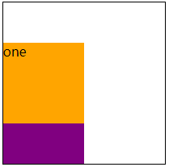
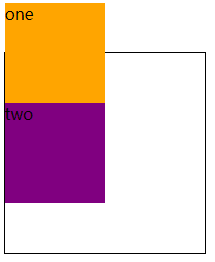
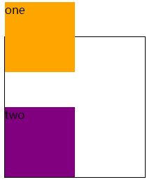
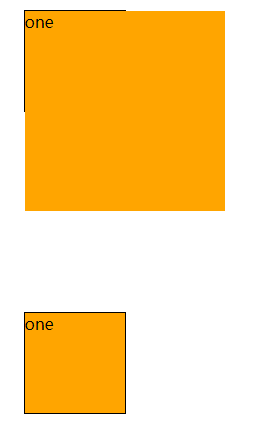
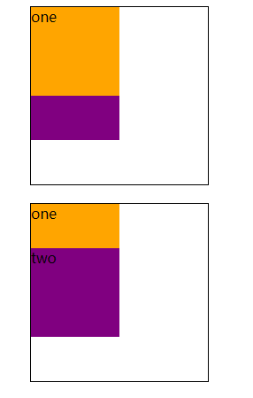

简介
relative其实是position中的一个属性，positon有五个属性分别为static、relative、absolute、fixed、sticky，分别代表不同的定位类型。大致分为下面四种：
定位类型
- 定位元素（positioned element）是其计算后位置属性为
relative,absolute,fixed或sticky的一个元素。 - 相对定位元素（relatively positioned element）是计算后位置属性为
relative的元素。 - 绝对定位元素（absolutely positioned element）是计算后位置属性为
absolute或fixed的元素。 - 粘性定位元素（stickily positioned element）是计算后位置属性为
sticky的元素。
static、relative、absolute、fixed、sticky取值
static
该关键字指定元素使用正常的布局行为，即元素在文档常规流中当前的布局位置。此时 top, right, bottom, left 和 z-index 属性无效。
relative
该关键字下，元素先放置在未添加定位时的位置，再在不改变页面布局的前提下调整元素位置（因此会在此元素未添加定位时所在位置留下空白）。position:relative 对 table-*-group, table-row, table-column, table-cell, table-caption 元素无效。
absolute
不为元素预留空间，通过指定元素相对于最近的非 static 定位祖先元素的偏移，来确定元素位置。绝对定位的元素可以设置外边距（margins），且不会与其他边距合并。
fixed
不为元素预留空间，而是通过指定元素相对于屏幕视口（viewport）的位置来指定元素位置。元素的位置在屏幕滚动时不会改变。打印时，元素会出现在的每页的固定位置。fixed 属性会创建新的层叠上下文。当元素祖先的 transform 属性非 none 时，容器由视口改为该祖先。
sticky（实验属性）
盒位置根据正常流计算(这称为正常流动中的位置)，然后相对于该元素在流中的 flow root（BFC）和 containing block（最近的块级祖先元素）定位。在所有情况下（即便被定位元素为 table 时），该元素定位均不对后续元素造成影响。当元素 B 被粘性定位时，后续元素的位置仍按照 B 未定位时的位置来确定。position: sticky 对 table 元素的效果与 position: relative 相同。
语法
1 | postion: static | relative | absolute | sticky | fixed; |
relative 的特性
在上面看到MDN对relative的定位的一下描述，但是并没有描述的比较通俗，通过下面的实例总结一下relative的特性。
公用代码
1 | <style> |
relative 是相对于定位
直接上代码，修改代码如下：
1 | .one { |
效果图如下：

把div.one设置position: relative时，并且设置top: 50px时，可以看到div.one的元素相对于自身在正常流中的位置向下移动了50px，它挡住了一半的div.two元素。relative的四个定位值top、left、bottom、right是相对自身移动的。
如果设置了对立属性 top/bottom、left/right 的相对定位元素，它的 top/left 生效，right/bottom 无效。
relative 不改变布局
margin-top: 负值修改代码如下：
1 | .one { |
代码执行效果如下：

可以看到div.one设置margin-top: -50px;时，它会影响到它相邻的兄弟元素div.two的位置，div.one/div.two都相对于原来的位置向上移动了50px。
top: -50px;修改代码如下：
1 | .one { |
代码执行效果如下：

可以看到div.one设置postion: relative; top: -50px;时，它不会影响到它相邻的兄弟元素div.two的位置，div.one都相对于原来的位置向上移动了50px，而div.two的位置是不变的。
relative是相对于自身定位的。relative是不会改变布局的
relative 的限制作用
relative 对 absolute 的限制作用
absolute定位的是其第一个祖先元素定位属性不为 static 属性。这个就不多赘述，基本上都在用这种布局。
如果设置postion: absolute;元素的父元素没有设置position: relative;，那么设置position: absolute;元素的绝对定位就会最外层的根元素定位。
relative 对 overflow 的限制作用
其实这个也比较常用但是一般不会太注意relative对overflow的影响。
父元素不添加 relative
修改html代码如下：
1 | <div class="box"> |
修改css代码如下：
1 | .box { |
下过显示如下图所示：

可以看到第一个div.box没有设置position: relative;时，子元素设置position: absoulte;时，并且子元素的宽度高度大于父元素的宽度高度时，它会超出父元素的范围。
第二个div.box设置了position: relative;时，子元素设置不会超出父元素的宽高范围。
relative 对层级 z-index 的限制作用
对于一个已经定位的元素（即position属性值不是static的元素），z-index 属性指定：
- 元素在当前堆叠上下文中的堆叠层级。
- 元素是否创建一个新的本地堆叠上下文。
修改html代码如下：
1 | <div class="box"> |
修改css代码如下：
1 | .box { |
效果图如下：

在下面的第一幅图中，设置了margin负值，虽然同时设置了z-index为数值，但是后面的元素依然覆盖了前面的元素，而当增加了定位属性position: relative后，创建了层叠上下文，前面元素的层叠顺序高，虽然同时设置了margin负值，但是后面的元素依然覆盖不了前面的元素。
相对定位 relative 的使用原则-最小化
虽然relative定位很好用，并且使用的频率很高，但是根据张鑫旭大神总结的布局实践原则，最好基于以下原则为好：
- 尽量避免使用
relative，如果要定位某些元素，看能否使用”无依赖的绝对定位”实现； - 如果使用场景受限，一定要使用
relative，则务必使relative最小化。
比如，我们想在某个模块的右上角定位一个图标，如果让你去布局实现的话，你该如何布局呢？十有八九会如下面的方式实现：
1 | <div style="position: relative"> |
但是，我们可以采用”relative 的最小化使用原则”的方式实现，其代码如下面的方式实现：
1 | <div> |
总结
position: relative;其实它的特殊性比较少，但是最后的规则尽量要遵循，就是relative 的最小化使用原则。